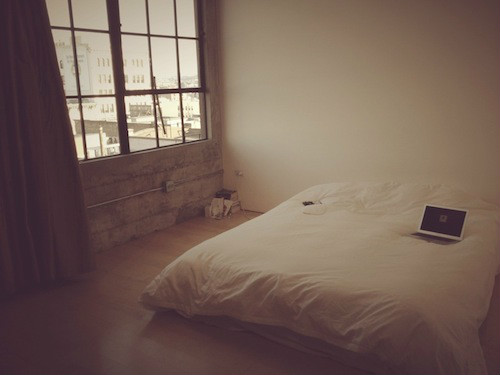
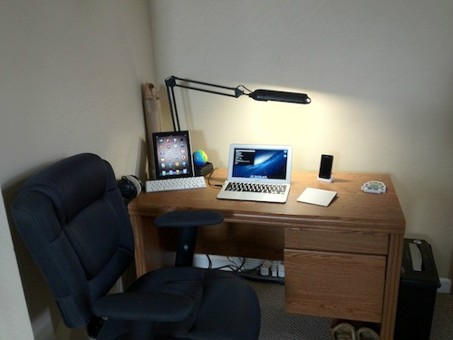

おそらく、この記事を読んでいるプログラマーのほとんどは、オープンフロアのパーティション区画でプログラミングをしているだろう。このような作業環境は最もスペースを節約できるが、必ずしも作業の労力や集中力を節約できるとは限らない。プログラマーはオープンオフィスを好まない。オープンオフィスは騒がしく、各種の妨害が発生しやすいためだ。プログラマーは最も邪魔されることを嫌う職業集団である。しかし、個室オフィスを利用できるのはすべてのプログラマーとは限らない。彼らはたとえ騒がしいオープンフロアのパーティション区画でプログラミングをしていても、期限内に仕事を完了しなければならない。豚肉が食べられなくても、豚が走るのを見ることはできる。本記事では、海外の有名プログラマーのデスクの様子をいくつか収集した。皆さんの参考までに。

1、Ilya Grigorik: Google 工程师。

2、Alex MacCaw: JavaScriptプログラマー、O'Reilly著者、現在Stripeで働いている。

3、Sam Soffes: iOSおよびRailsソフトウェアエンジニア、Syntheticの元従業員、現在起業中。

4、Max Howell: Homebrew 的作者。

5、Scott Hanselman: マイクロソフトのエンジニア。

6、Jeff Lindsay: オープンソースハッカー、Hacker Dojo創設者、現在Twilioで働いている。

7、Dr Nic Williams: Rubyコミュニティの全員が彼の作品を聞いたり見たりしたことがあるはずだ。100以上のオープンソースプロジェクトに貢献しており、現在はEngine Yardで働いている。

8、Phil Haack: 元マイクロソフトASP.NETプログラムマネージャー、現在GitHubで働いている。

9、Michael Bleigh: 広く使用されているRubyのオープンソースソフトウェアライブラリをいくつか開発した。

10、Chris Eppstein: Compass 框架作者和 Sass 贡献者。